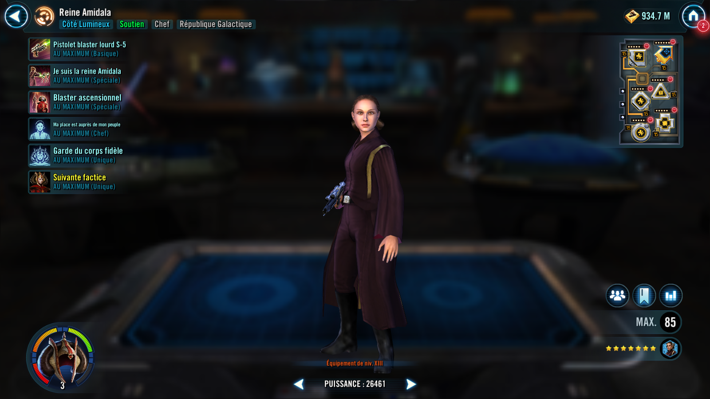

Deal Physical damage to target enemy and Expose them for 2 turns, which can't be evaded if there is an active ally Handmaiden Decoy. All Galactic Republic allies gain 3 stacks of Heal Over Time and Protection Over Time for 2 turns.
If there is an active ally Handmaiden Decoy, Galactic Republic allies recover 5% Health and Protection.
Dispel all buffs on all enemies and deal Physical damage to them. All allies gain Accuracy Up for 2 turns.
If there is an active ally Handmaiden Decoy, Stagger target enemy for 2 turns, which can't be evaded or resisted, all Galactic Republic allies gain Defense Penetration Up, 3 stacks of Heal Over Time and Protection Over Time for 2 turns, and this attack can't be evaded.
Omicron Boost : While in Grand Arenas and there are no Galactic Legend allies: This attack ignores enemy Protection and all allies gain Critical Damage Up and 4 stacks of Heal Over Time and Protection Over Time for 2 turns. All enemies are inflicted with a stack of Damage Over Time for each active Galactic Republic ally for 2 turns, which can't be resisted, Speed Down for 2 turns, which can't be resisted, Vulnerable for 2 turns, which can't be copied, dispelled, or resisted, and have their cooldowns increased by 1, which can't be resisted. If there is an active ally Handmaiden Decoy, these effects can't be evaded.
Dispel all debuffs on all allies. Call all other non-Galactic Legend Galactic Republic allies to assist and they and Queen Amidala recover 20% Health and Protection. Remove 50% Turn Meter from target enemy, which can't be resisted.
If all allies are Galactic Republic and there are no Galactic Legend or Scoundrel allies, summon an ally Handmaiden Decoy to battle if the ally slot is available.
If an ally Handmaiden Decoy was already present, all Galactic Republic allies gain Defense Up, Speed Up, and Tenacity Up for 2 turns, and Galactic Republic non-Tank allies Stealth for 2 turns.
All allies have +20% Defense and +15% Max Health and Max Protection.
At the start of battle, if all allies are Galactic Republic and there are no Galactic Legend allies:
- Whenever an enemy attacks out of turn, they are inflicted with Damage Over Time for 1 turn, which can't be evaded or resisted and remove 10% Turn Meter from all enemies, which can't be resisted.
- At the start of each ally's turn, they gain 3% Critical Damage (stacking) for each stack of Heal Over Time they have and +3% Offense (stacking) for each stack of Protection Over Time they have, until the end of their turn.
- Whenever an enemy critically hits an ally, that enemy has -5% Critical Damage, Defense, and Offense (stacking, max -50%), until the end of the encounter, which can't be resisted.
Omicron Boost : While in Grand Arenas and if there are no Galactic Legend allies and all allies are Galactic Republic: Whenever an ally uses a Special ability, they gain bonuses based on their role:
- Attackers: Gain Offense Up for 2 turns and call another random ally to assist, dealing 20% more damage
- Healers and Supports: Gain Protection Up (50%, stacking) and Speed Up for 3 turns
- Tanks: Recover 25% Health and Protection
Queen Amidala has +20% Max Health and Max Protection, +10% Critical Chance and Critical Damage, and all allies are immune to cooldown manipulation.
Whenever an ally Handmaiden Decoy is summoned, she Taunts until she is defeated, which can't be dispelled or prevented. She is immune to all other buffs, debuffs, Healing and Protection recovery, and she doesn't take turns. Whenever she is defeated by an enemy, the enemy who defeated her is inflicted with Doubt for 2 turns, which can't be evaded or resisted, and Queen Amidala gains a bonus turn and Damage Immunity for 2 turns, which can't be copied, dispelled, or prevented.
If there is an active ally Handmaiden Decoy:
- Whenever Heal Over Time or Protection Over Time expire on a Galactic Republic ally, they recover 5% Health and Protection.
- Whenever Heal Over Time or Protection Over Time expire on Queen Amidala, she gains a stack of Queen's Protection (max 10), which can't be copied, dispelled, or prevented, until the end of battle. For each stack of Queen's Protection Queen Amidala has, all other Galactic Republic allies gain double those stats. The allied Handmaiden Decoy is immune to these effects and they persist when the Decoy is defeated, but are dispelled when Queen Amidala is defeated.
Queen's Protection:
+3% Max Health and Max Protection, +5% Potency and Tenacity, and +5 Speed (per stack)
Omicron Boost : While in Grand Arenas and if there are no Galactic Legend or Scoundrel allies and all allies are Galactic Republic: All allies gain 25% Critical Damage, 40% Mastery, and are immune to Fear and Healing Immunity.
Whenever an ally is inflicted with a stack of Damage Over Time, they dispel it and all allies gain a stack of Healing Over Time and Protection Over Time for 2 turns.
At the start of each encounter, summon an ally Handmaiden Decoy. Whenever an ally Decoy is critically hit, all enemies are inflicted with Potency Down and Tenacity Down for 2 turns, which can't be evaded.
Light Side, Tank, Galactic Republic
[Basic] Bodyguard: Galactic Republic allies recover 10% Health and Protection. Grant Advantage for 1 turn to a random enemy who doesn't already have it, which can't be evaded or resisted.
[Unique] Summoned: This unit's stats scale with the summoner's stats. This unit can only be summoned to the ally slot if it's available. This unit can't be summoned in certain raids. This unit can't be revived. If an effect counts defeated units, this unit doesn't count. When there are no other allied combatants, this unit escapes from battle. A unit can't be revived if this summoned unit exists in their slot.